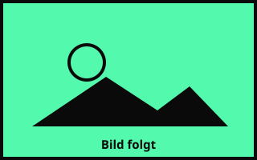

Wenn über politisches Handeln diskutiert wird, sind die Argumente dagegen oft erstaunlich stabil — unabhängig davon, wer sie vorbringt, in welchem Forum und zu welchem konkreten Vorhaben. Der Ausreden-Kompass dokumentiert zwölf wiederkehrende Argumentationsmuster, die einzeln oder in Kombination dazu dienen, regulatorisches Handeln zu verzögern, zu delegitimieren oder strukturell zu blockieren.
Wie KI-Regulierung verzögert wird

Zwölf Argumentationsmuster, mit denen erkenntnisreiche Debatten um KI-Regulierung gebremst und politisches Handeln blockiert wird.
Zum Kompass → OPEN DATAWie offene Daten verhindert werden
Zwölf Argumentationsmuster, mit denen Forderungen nach offenen Daten zurückgewiesen und Transparenz strukturell verhindert wird.
Zum Kompass →